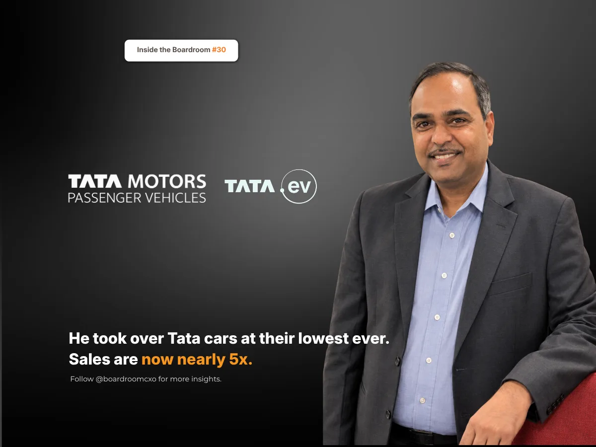

Key Takeaways
- Tata Motors sold 5,676 cars in India in March 2020, down 68%, and 1,31,197 in FY20, down 38%, for a market share of about 5%. Shailesh Chandra took charge of the car business on 1 April 2020, as the country locked down.
- He did not chase volume with price cuts. He kept backing electric cars when few Indians bought them and widened the range with the Punch, a small SUV launched in 2021.
- In FY26 Tata sold 6,31,387 cars in India, nearly five times its FY20 volume, including a record 92,120 EVs, and finished the second half as India's No. 2 carmaker by registrations. Boards should judge a turnaround leader on the bets they protect, not the discounts they offer.
In March 2020, Tata Motors sold just 5,676 cars in India, down 68% from a year earlier.
Over the full year FY20, its car sales fell 38%, to 1,31,197, and its share of India's car market was about 5%.
Then the country locked down. Showrooms shut. Factories stopped.
Who Is Shailesh Chandra?
On 1 April 2020, Shailesh Chandra took charge of Tata Motors' passenger vehicle business.
He was no outsider. He first joined Tata Motors in 1995 as a production manager, spent three years at Tata Sons, and came back in 2016 to run corporate strategy. Before taking over the car business, he had been president of its electric vehicle and corporate strategy work.
Today he is managing director and chief executive of Tata Motors Passenger Vehicles Limited.
The Two Bets Instead of a Price War
Most leaders in that seat would have cut prices to win buyers back.
He did not. He made two bets instead.
The first was electric cars. Tata kept backing them when very few Indians were buying them, building a range of EVs well before most rivals had one.
The second was the range itself. Tata widened its line-up with the Punch, a small SUV launched in October 2021, that gave first-time SUV buyers a reason to walk into a Tata showroom.
Both bets needed patience. Electric cars, in particular, took years to catch on.
What the Bets Delivered
In FY26, Tata sold 6,31,387 cars in India, nearly five times its FY20 volume. It sold a record 92,120 electric cars that year. By the second half of FY26, it was India's No. 2 carmaker by Vahan registrations, a position it held into the April to June 2026 quarter.
In electric cars, the lead is wider still. Between April and June 2026, 32,283 of the 82,737 electric cars registered in India were Tatas, about 39%. Demand is now ahead of supply: "In EVs, we are starkly seeing quite a wide gap between demand and supply," Chandra said in July 2026.
Now go back to that worst month of 2020. In March 2026, Tata sold 66,192 cars in India, almost 12 times what it sold six years earlier.
The Boardroom Lesson: The Low Point Is Where the Next Leader Begins
A collapse in sales invites the quickest fix: discounts, dealer incentives, anything that moves cars this month. It can buy a quarter. It rarely builds a business.
A brand's lowest point is not its ending. It is where the next leader begins.
Chandra's answer was to protect the long bets, electric cars and a wider SUV range, when the short-term numbers gave every reason to abandon them.
Common Mistakes Boards Make When a Business Hits Its Low Point
Boards facing a sharp fall in sales tend to make the same three errors.
They buy volume with price. Discounts bring buyers back briefly and train them to wait for the next one. They also eat the money needed for new products.
They cut the long-term bets first. Projects that will not pay for years, like electric cars in 2020, are the easiest to cancel in a crisis. They are often the ones that matter most.
They look outside for a saviour. Chandra had spent most of his career inside Tata Motors. An insider who knows where the long bets are can protect them better than an outsider brought in to cut costs.
A Framework for Hiring a Leader at a Low Point
When we brief boards on a CXO search for a business at the bottom of a cycle, we push for three specific checks.
- Ask which bets the candidate would protect. The right leader can name the two or three long-term moves that must survive the downturn, and explain why.
- Look for patience backed by numbers. Electric cars took years to pay off. Ask candidates how they kept a board's confidence while a bet was still losing money.
- Consider strong insiders seriously. A leader who has run strategy and new businesses inside the company may already know the way out.
Why This Belongs in the Boardroom, Not Just the Business Pages
This sits alongside the story we told of Rajiv Bajaj and the Chetak, another leader whose electric bet took years to prove itself. And it is the other side of the story we told of R C Bhargava at Maruti Suzuki, whose market share Tata was among those to take.
The low point is when leaders are most tempted to trade the future for this month's numbers. Boards that hire well find leaders who will not.
Sources
- Rushlane, Tata Motors March 2020 sales, April 2020
- Rushlane, Mayank Pareek steps down; Shailesh Chandra to head Tata Motors PV business, March 2020
- Storyboard18, Tata Motors Passenger Vehicles March sales rise 29% YoY to 66,971 units, April 2026
- Autocar Professional, Tata EV sales cross 300,000 units, hit a new high in March and FY2026, April 2026
- NSE filing (Tata Motors Passenger Vehicles), Passenger vehicle sales, March 2026 and FY26, April 2026
- Autocar Professional, Q1 FY27: Tata Motors Pulls Clear at No. 2 on Strong Punch, Nexon and Sierra Demand, July 2026
- Autocar Professional, India's Electric-Car Penetration May Touch 8% by FY27-End: Shailesh Chandra, July 2026
Related Reading
Rajiv Bajaj Walked Away From Scooters. Then He Rebuilt the Chetak Name.
Read → R · 02 Founder Leadership · November 2026R C Bhargava: Maruti's Share Hit a 13-Year Low. It Still Sold a Record 24 Lakh Cars.
Read → R · 03 Founder Leadership · September 2026Anish Shah: The Outsider Who Fixed Mahindra's ₹5,200 Crore Problem
Read →Taking over a business at its low point and need leaders who build instead of discounting?
We screen for leaders who make patient bets when the numbers are at their worst, not just those who chase the next quarter. Brief us on your next CXO mandate and we will tell you what the market actually has to offer.
Brief Us on a Mandate See all Sales & Retail roles we fill →